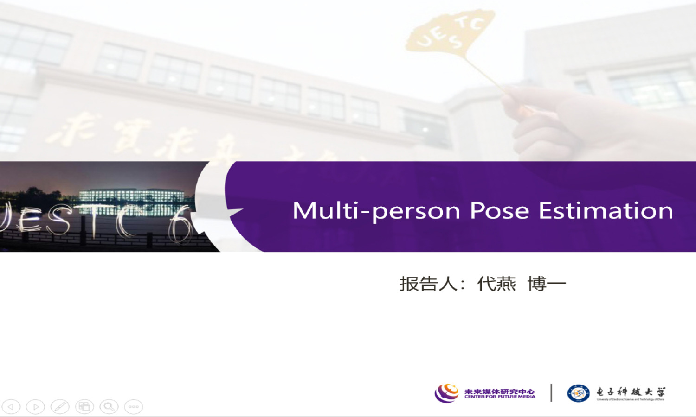

Speaker: Yan Dai [
PPT(password: pkxb)
Video(password: z7np) ]
Topic:Multi-person Pose Estimation
Date:June 19, 2020
Abstract:
Despite of the recent great progress on multi-person pose estimation, existing solutions still undergo serious degradation under the condition of “crowded scenes”, where RGB images capture complex real-world scenes with highly overlapped people, severe occlusions, diverse postures and scale variations. In this work, we focus on two main problems: 1) how to remove the joints-of-interference from a given person proposal; and 2) how to infer the ambiguous joints. To tackle these problems, we propose a new pipeline named Relation based Pose Graph Network (RPGNet). Unlike existing works that directly predict joints-of-target by labeling joints-of-interference as false positive, we encourage all joints to be predicted and model their relation through a multi-joints relation parser (MRP) for joints-of-interference removal. This new pipeline will largely relieve the confusion of the joints estimation model when seeing identical joints with totally distinct labels(e.g., the identical hand exists in two bounding boxes). Furthermore, human beings can well estimate the joints with ambiguity by looking at the surrounding regions. For example, human can easily infer the location of ‘neck’ after seeing
‘head’ and ‘shoulder’. Inspired by this, we propose a joints refinement machine (JRM) with commonsense knowledge to refine pose estimation results for handling ambiguous joints. Extensive experiments on pose estimation benchmarks demonstrate that our method significantly outperforms existing state-of-the-art methods by a large margin.